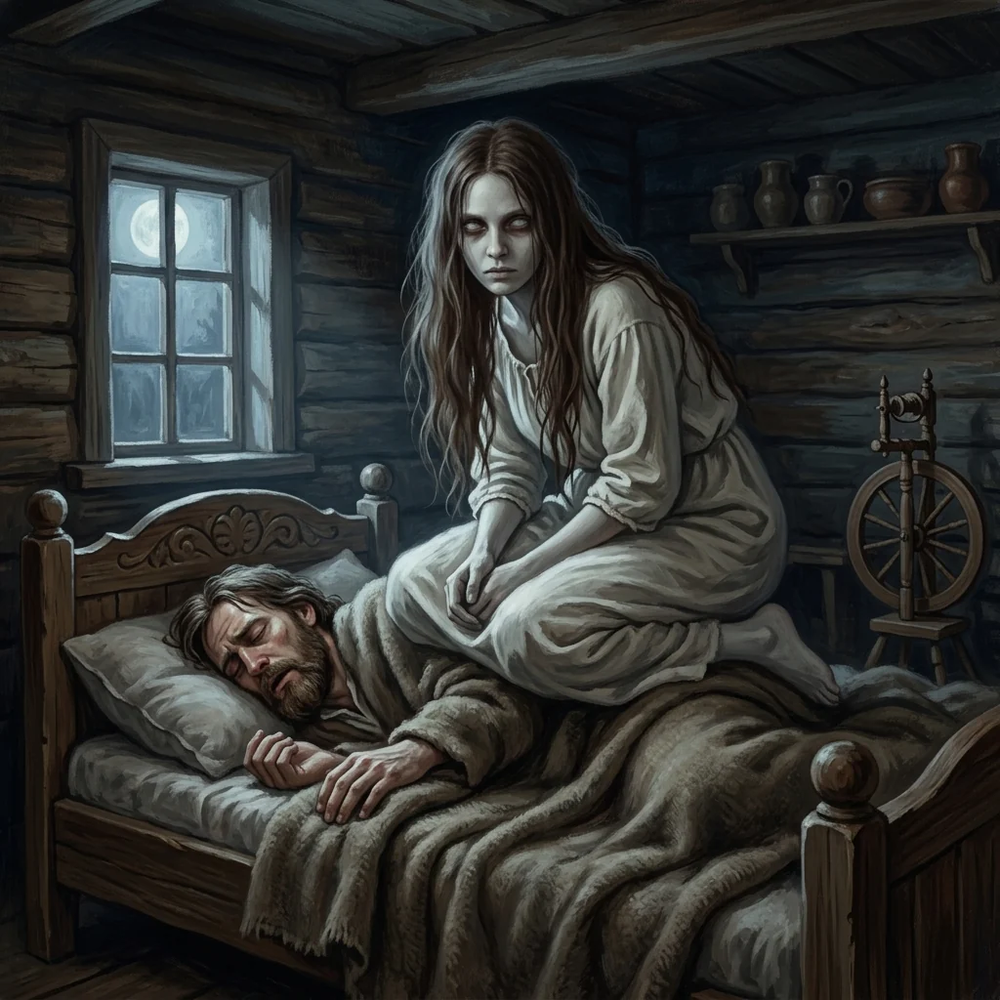

Luupainaja

Pale young woman spirit kneeling heavily upon a sleeper like a stone in an Estonian farmhouse chamber
Aura: Chilling sleep paralysis dread created through the heavy suffocating kneeling posture, pale unearthly gaze, deep cabin shadows, and cold natural moonlight.
Audit ciri dan sumber
- One female spirit kneeling upon a sleeping human in bed, weighing them down like stone
- Pale, uncanny unearthly facial expression and hollow staring gaze
- Fully modest historical linen night shift, no nudity
- Rustic wooden bedroom interior with moonlight from window
- No horns, wings, generic neon glow, or colored mist
Verified native PNG. Depicts one pale female spirit kneeling on a sleeping man's back in a wooden bed inside a log cabin. Uncanny staring expression and heavy crouching pose capture the documented stone-like pressing spirit. Modest historical linen nightwear, no nudity or gore. Natural moonlight through window without generic glowing outlines or neon mist; clean painterly craft free of text or watermarks.
Review sumberUse case: stylized-concept. Asset: square premium painterly naturalistic illustration for Mythics folklore encyclopedia. Subject: Luupainaja, nightmare pressing spirit of Estonian folklore. Depict ONE supernatural spirit in the form of a pale, unearthly young woman kneeling heavily upon the chest of a sleeping person in a rustic historical wooden bed. The spirit wears a simple modest pale historical linen shift, long dark hair draping down, with an intense, uncanny, hollow unblinking gaze fixed forward. Heavy suffocating pressing posture conveys immense supernatural weight like stone. Rustic 19th-century Estonian log farmhouse interior, deep shadows, cold pale moonlight entering through a small window. Fully modest attire, respectful historical framing, no nudity, no gore. No wings, no horns, no generic glowing aura, neon outline, energy ribbons or luminous colored mist. Beautifully resolved anatomy, cinematic painterly craft, no text, labels, logo, border, or watermark.